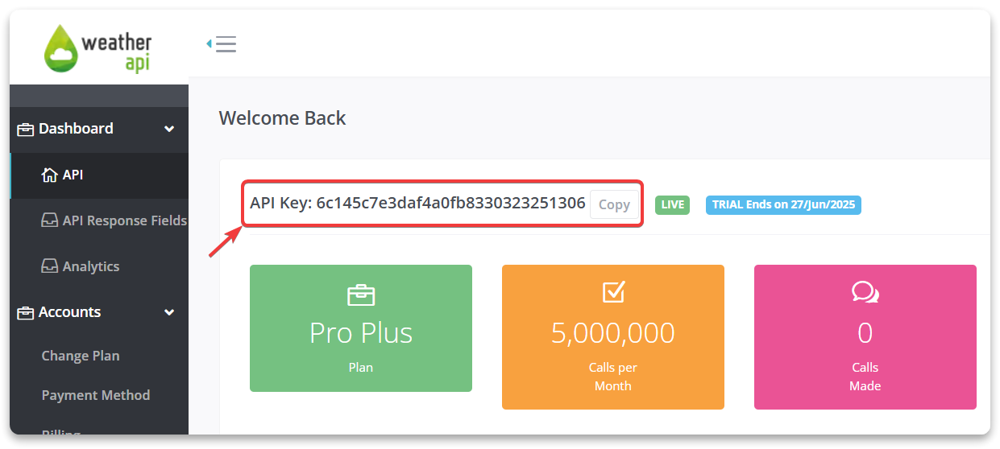
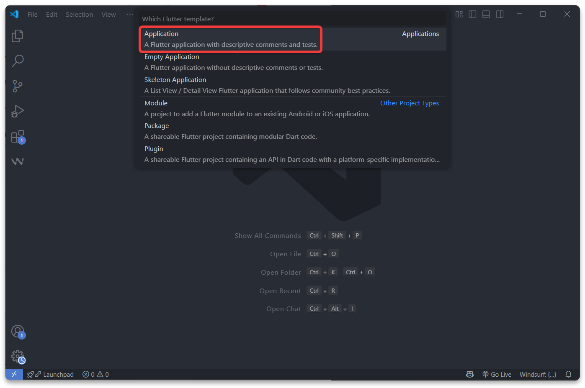
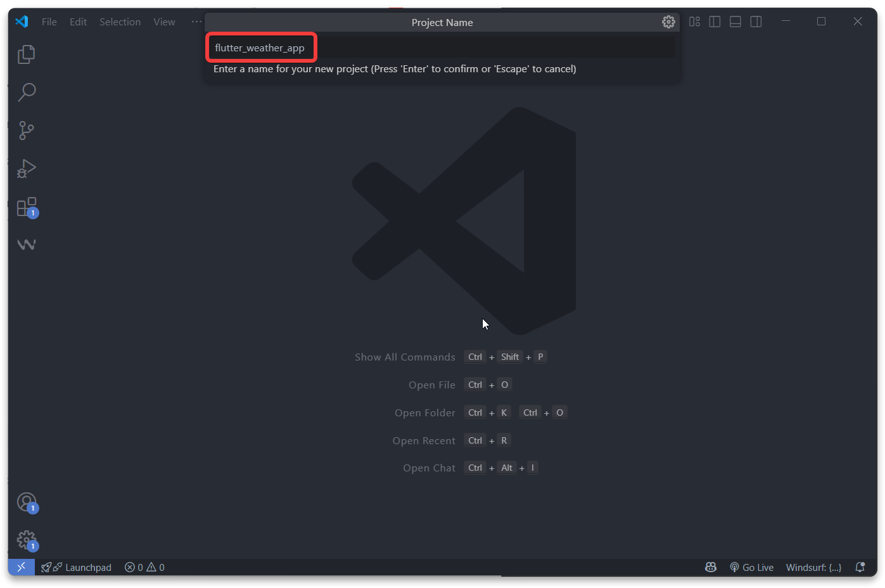
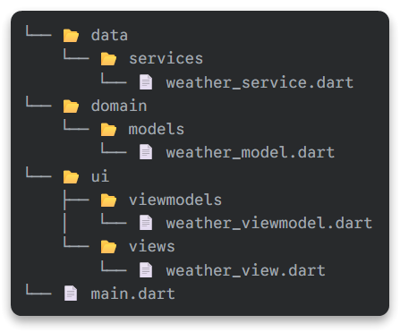
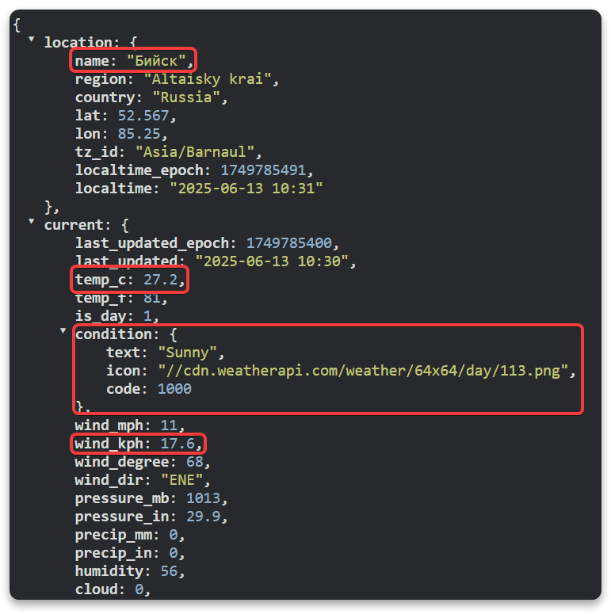
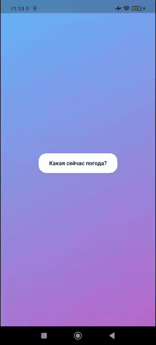

🔥 Flutter. Разработка погодного приложения
Разработка погодного приложения

Используемый стек технологий:
WeatherAPI: Бесплатный и мощный сервис для получения погодных данных.Dio: Для выполнения сетевых запросов к API.Provider: Для управления состоянием приложения.Архитектура MVVM: Для создания чистого, масштабируемого и тестируемого кода.
Шаг 0: Получение ключа WeatherAPI.com
Cервис WeatherAPI.com требует API ключ для доступа к данным. Это стандартная практика для большинства API-сервисов.
Возможно, нужно будет включить прокси для доступа к сервису
- Зарегистрируйтесь на сайте https://www.weatherapi.com/
- Войдите в свой аккаунт.
- На главной панели вы увидите ваш API Key. Скопируйте его. Он понадобится в коде.

ВАЖНО: Всегда храните API ключ в секрете.
В реальных проектах его нельзя встраивать прямо в код. Используйте для этого переменные окружения или пакет flutter_dotenv. В рамках этого урока для простоты мы оставим его в коде.
Шаг 1: Настройка проекта и зависимостей
Сначала создадим новый Flutter-проект и добавим необходимые библиотеки.
- Создайте новый проект Flutter через
VSCodeилиAndroidStudio


- Добавьте зависимости в файл
pubspec.yaml. Понадобятсяdioдля сетевых запросов иproviderдля управления состоянием.
pubspec.yaml


dependencies:
flutter:
sdk: flutter
dio: ^5.8.0+1
provider: ^6.1.5
dev_dependencies:
flutter_test:
sdk: flutter
flutter_lints: ^3.0.0- Выполните в терминале
flutter pub getдля установки пакетов.
Шаг 2: Архитектура MVVM (Model-View-ViewModel)
Прежде чем писать код, давайте разберемся в нашей архитектуре. MVVM помогает разделить логику и пользовательский интерфейс, делая код более чистым и организованным.
- Model (Модель): Это структура данных. В данном случае это будет класс
Weather, описывающий погоду (температура, скорость ветра и т.д.). Модель ничего не знает о том, как данные получаются или отображаются. - View (Представление): Это UI (пользовательский интерфейс), то, что видит пользователь. View отвечает только за отображение данных и передачу действий пользователя (например, нажатие кнопки) во
ViewModel. Во Flutter это виджеты. - ViewModel (Модель Представления): Это
мозгэкрана. ViewModel запрашивает данные (например, из сети), обрабатывает их и предоставляет в готовом для отображения виде для View. Она также управляет состоянием экрана (загрузка, ошибка, данные загружены).
Также добавим Service (Сервис) - это вспомогательный класс, который будет напрямую общаться с WeatherAPI. ViewModel будет использовать этот сервис, чтобы не заниматься "лишней" работой по формированию HTTP-запросов.
Структура папок и файлов

Шаг 3: Создание Модели (Model)
На основе документации WeatherAPI.com мы определим, какие данные хотим получать. Нам интересны: название города, температура, текстовое описание погоды, ее код (для иконки) и скорость ветра.
Обновим файл lib/domain/models/weather_model.dart:
Файл weather_model.dart
Dart
class Weather {
final String cityName; // Название города
final double temperature; // Температура в градусах Цельсия
final String condition; // Текстовое описание погоды (например, "Sunny")
final String conditionIcon; // Иконка изображение
final int conditionCode; // Код погоды для подбора иконки
final double windSpeed; // Скорость ветра в км/ч
Weather({
required this.cityName,
required this.temperature,
required this.condition,
required this.conditionIcon,
required this.conditionCode,
required this.windSpeed,
});
// Фабричный конструктор fromJson для создания экземпляра Weather
// из JSON-объекта, который возвращает WeatherAPI.com.
factory Weather.fromJson(Map json) {
return Weather(
// Данные о локации находятся в объекте 'location'.
cityName: json['location']['name'] as String,
// Текущие погодные данные находятся в объекте 'current'.
temperature: json['current']['temp_c'] as double,
windSpeed: json['current']['wind_kph'] as double,
// Информация о погодных условиях вложена в объект 'condition'.
condition: json['current']['condition']['text'] as String,
conditionIcon: json['current']['condition']['icon'] as String,
conditionCode: json['current']['condition']['code'] as int,
);
}
} 
Для формирования запроса будем использовать конкретные координаты (например, город Бийск: широта 52.53, долгота 85.20)
Пример URL-запроса к WeatherAPI.com:
https://api.weatherapi.com/v1/current.json?key=YOUR_API_KEY&q=52.53,85.20
| Часть URL | Название | Описание / Значение |
|---|---|---|
https:// |
Протокол | Определяет безопасный способ передачи данных. |
api.weatherapi.com |
Доменное имя хоста | Адрес сервера, который предоставляет API. |
/v1/ |
Версия API | Указывает на конкретную версию используемого API. |
current.json |
Эндпоинт | Ресурс для получения текущих погодных данных. |
? |
Разделитель | Отделяет URL от списка параметров. |
key=YOUR_API_KEY |
Параметр запроса | Уникальный ключ API, который вы получили при регистрации. |
& |
Разделитель | Разделяет параметры в запросе. |
q=52.53,85.20 |
Параметр запроса | Указывает местоположение. q (query) может принимать широту и долготу. |
ПРИМЕЧАНИЕ: Эндпоинт
Эндпоинт это часть URL-адреса куда отправляем запрос для получения данных.
Это точка входа в API, где можно получить доступ к ресурсам сервера.
Шаг 4: Реализация Сервиса (Service)
- Сервис будет отвечать за всю логику сетевых запросов.
- Он будет использовать
dioдля связи с WeatherAPI.com. - Здесь нужно указать
APIключ.
Добавим файл lib/data/services/weather_service.dart:
Файл weather_service.dart
Dart
import 'package:dio/dio.dart';
import '../../domain/models/weather_model.dart';
// Сервис отвечает за получение данных о погоде из WeatherAPI.com.
class WeatherService {
// Создаем экземпляр Dio с базовым URL для WeatherAPI
final Dio _dio = Dio(BaseOptions(baseUrl: 'https://api.weatherapi.com/v1/'));
// ЗАМЕНИТЕ 'YOUR_API_KEY' НА ВАШ КЛЮЧ, ПОЛУЧЕННЫЙ НА WEATHERAPI.COM
final String _apiKey = 'YOUR_API_KEY';
// Асинхронный метод для получения текущей погоды по координатам.
Future getCurrentWeather(double latitude, double longitude) async {
try {
// Выполняем GET-запрос к эндпоинту 'current.json'.
final response = await _dio.get(
'current.json',
queryParameters: {
'key': _apiKey,
'q': '$latitude,$longitude', // Формируем строку с координатами
},
);
// Если запрос успешен (статус код 200), парсим данные
if (response.statusCode == 200) {
return Weather.fromJson(response.data);
} else {
// Если сервер вернул ошибку, выбрасываем исключение.
throw Exception(
'Ошибка при получении погоды: ${response.statusMessage}',
);
}
} on DioException catch (e) {
// Обрабатываем ошибки, связанные с Dio (например, нет интернета).
if (e.type == DioExceptionType.connectionError ||
e.type == DioExceptionType.connectionTimeout) {
throw Exception(
'Отсутствует интернет-соединение. Проверьте ваше подключение.',
);
}
// В противном случае, выбрасываем общее исключение.
throw Exception(e.message);
} catch (e) {
// Ловим любые другие возможные ошибки.
throw Exception('Произошла непредвиденная ошибка: $e');
}
}
} Шаг 5: Создание ViewModel
ViewModel свяжет Сервис и UI. Она будет использовать ChangeNotifier из пакета provider, чтобы уведомлять UI об изменениях своего состояния.
Добавим файл lib/ui/viewmodels/weather_viewmodel.dart
Файл weather_viewmodel.dart
Dart
import 'package:flutter/material.dart';
import '../../data/services/weather_service.dart';
import '../../domain/models/weather_model.dart';
class WeatherViewModel with ChangeNotifier {
final WeatherService _weatherService = WeatherService();
Weather? _weather;
bool _isLoading = false;
String? _errorMessage;
Weather? get weather => _weather;
bool get isLoading => _isLoading;
String? get errorMessage => _errorMessage;
Future fetchWeather({double lat = 52.53, double lon = 85.20}) async {
// 1. Устанавливаем состояние загрузки и сбрасываем предыдущие ошибки
_isLoading = true;
_errorMessage = null;
notifyListeners();
try {
// 2. Вызываем метод сервиса для получения данных.
// Используем пока что конкретные координаты
_weather = await _weatherService.getCurrentWeather(lat, lon);
} catch (e) {
// 3. В случае ошибки, сохраняем сообщение
_errorMessage = e.toString();
} finally {
// 4. В любом случае, убираем состояние загрузки.
_isLoading = false;
// Уведомляем об окончании загрузки и возможной ошибке
notifyListeners();
}
}
} Шаг 5.1: Инфографика. Объяснение работы кода


Шаг 6: Вёрстка интерфейса (View)
Теперь, когда вся логика готова, можно собрать UI. View будет "слушать" изменения во WeatherViewModel и перерисовываться в зависимости от ее состояния.
Добавим файл lib/ui/views/weather_view.dart:
Файл weather_view.dart
Dart
import 'package:flutter/material.dart';
import 'package:provider/provider.dart';
import '../viewmodels/weather_viewmodel.dart';
class WeatherView extends StatelessWidget {
const WeatherView({super.key});
@override
Widget build(BuildContext context) {
return Scaffold(
body: Consumer(
builder: (context, viewModel, child) {
return Container(
decoration: BoxDecoration(
gradient: LinearGradient(
begin: Alignment.topLeft,
end: Alignment.bottomRight,
colors: [Colors.blue.shade300, Colors.purple.shade300],
),
),
child: Center(child: _buildUI(context, viewModel)),
);
},
),
);
}
Widget _buildUI(BuildContext context, WeatherViewModel viewModel) {
// 1. Если идет загрузка, показываем индикатор прогресса.
if (viewModel.isLoading) {
return const CircularProgressIndicator(color: Colors.white);
}
// 2. Если есть сообщение об ошибке, показываем его.
if (viewModel.errorMessage != null) {
return Padding(
padding: const EdgeInsets.all(16.0),
child: Text(
'Ошибка: ${viewModel.errorMessage}',
style: const TextStyle(
color: Colors.white,
fontSize: 18,
fontWeight: FontWeight.bold,
),
textAlign: TextAlign.center,
),
);
}
// 3. Если данные о погоде загружены, отображаем их.
if (viewModel.weather != null) {
return Column(
mainAxisAlignment: MainAxisAlignment.center,
children: [
Text(
viewModel.weather?.cityName ?? "", // Отображаем название города
style: const TextStyle(
fontSize: 32,
color: Colors.white,
fontWeight: FontWeight.w500,
),
),
const SizedBox(height: 10),
Image.network(
"https:${viewModel.weather!.conditionIcon}",
),
Text(
viewModel.weather!.condition, // Отображаем описание погоды
style: const TextStyle(fontSize: 22, color: Colors.white),
),
const SizedBox(height: 20),
Text(
'${viewModel.weather!.temperature.toStringAsFixed(1)}°C',
style: const TextStyle(
fontSize: 50,
fontWeight: FontWeight.bold,
color: Colors.white,
),
),
const SizedBox(height: 10),
Text(
'Скорость ветра: ${viewModel.weather!.windSpeed.toStringAsFixed(1)} км/ч',
style: const TextStyle(fontSize: 20, color: Colors.white70),
),
],
);
}
// 4. Начальное состояние: данных еще нет. Показываем кнопку.
return ElevatedButton(
style: ElevatedButton.styleFrom(
backgroundColor: Colors.white,
foregroundColor: Colors.black,
minimumSize: const Size(200, 50),
shape: RoundedRectangleBorder(borderRadius: BorderRadius.circular(20)),
),
onPressed: () {
// Вызываем метод из ViewModel для загрузки данных.
// Мы используем read, потому что нужно только один раз вызвать метод,
// а не подписываться на изменения.
context.read().fetchWeather();
},
child: const Text('Какая сейчас погода?'),
);
}
} Шаг 7: Собираем все вместе в main.dart
Здесь нужно "предоставить" WeatherViewModel всему дереву виджетов с помощью ChangeNotifierProvider.
Файл main.dart
Dart
import 'package:flutter/material.dart';
import 'package:provider/provider.dart';
import 'ui/viewmodels/weather_viewmodel.dart';
import 'ui/views/weather_view.dart';
void main() {
runApp(const MyApp());
}
class MyApp extends StatelessWidget {
const MyApp({super.key});
@override
Widget build(BuildContext context) {
return ChangeNotifierProvider(
create: (context) => WeatherViewModel(),
child: MaterialApp(
title: 'Weather App',
theme: ThemeData(
primarySwatch: Colors.blue,
visualDensity: VisualDensity.adaptivePlatformDensity,
),
home: const WeatherView(),
),
);
}
}Шаг 8: Демонстрация работы приложения
- Нажимаем на кнопку
- Отображается индикатор загрузки
- При успешном получении данных отображается погода

- Допустим отключили интернет
- Нажимаем на кнопку
- Отображается индикатор загрузки
- Отображается ошибка